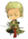
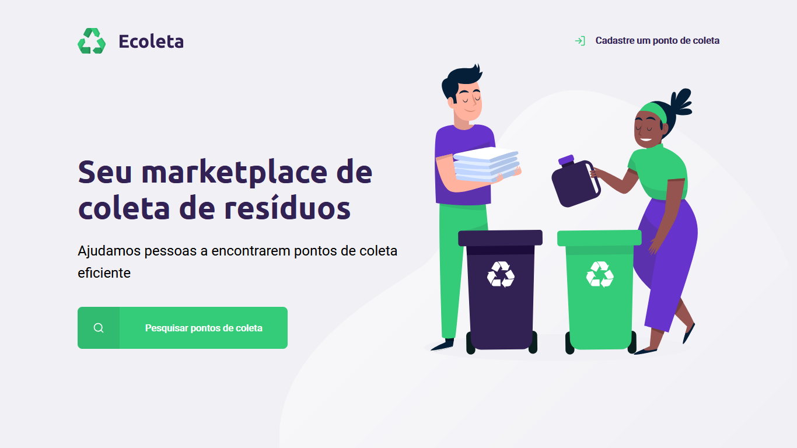
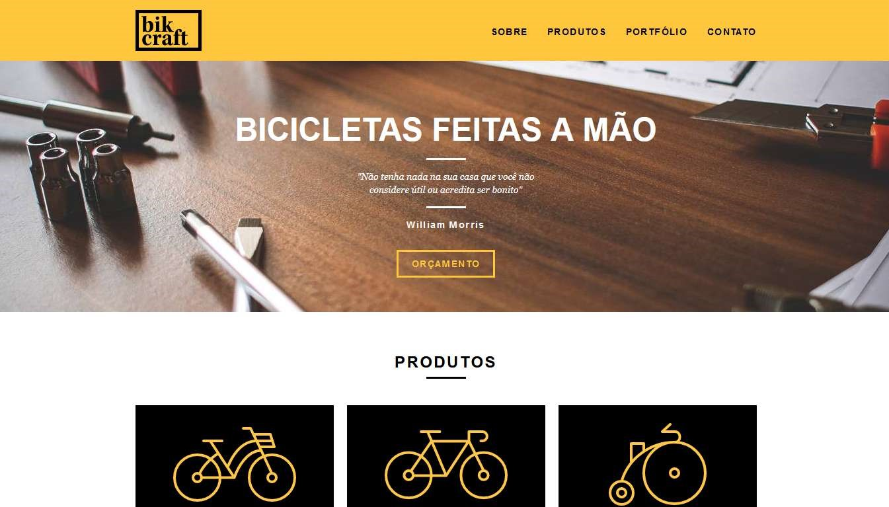
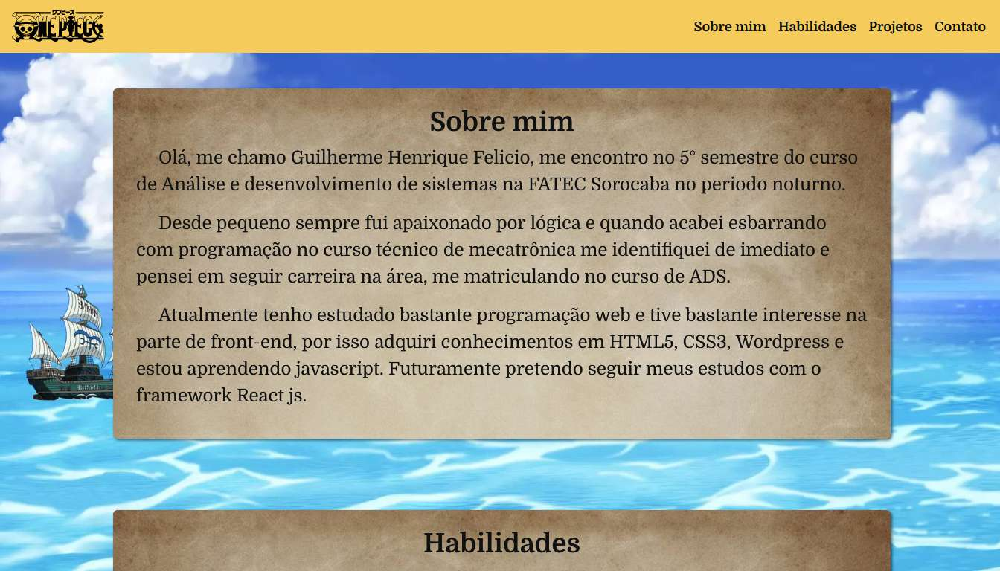

Sobre mim
Olá, me chamo Guilherme Henrique Felicio, me encontro no 5° semestre do curso de Análise e desenvolvimento de sistemas na FATEC Sorocaba no periodo noturno.
Desde pequeno sempre fui apaixonado por lógica e quando acabei esbarrando com programação no curso técnico de mecatrônica me identifiquei de imediato e pensei em seguir carreira na área, me matriculando no curso de ADS.
Atualmente tenho estudado bastante programação web e tive bastante interesse na parte de front-end, por isso adquiri conhecimentos em HTML5, CSS3, Wordpress e estou aprendendo javascript. Futuramente pretendo seguir meus estudos com o framework React js.
Habilidades
-

-

-

-

-

- 
Projetos
-
Ecoleta
Ecoleta é uma aplicação web desenvolvida e ministrada pela rocketseat. Na aplicação é possivel fazer o cadastro de pontos de coleta de reciclagem de qualquer região do Brasil.
Quer conhecer mais sobre o projeto? Navegue até o repositótio no Github!
Acesse meu Github -
Bikcraft
Bikcraft é um site institucional feito para uma loja de bicicletas personalizadas, desenvolvido durante o curso de web design completo da Origamid. Durante o curso foram aprendidos conceitos de design, e a construção de wireframes pelo aplicativo Adobe XD, além de HTML5, CSS, Javascript.
Quer conhecer mais sobre o projeto? Navegue até o repositótio no Github!
Acesse meu Github -
Portfólio Geek
Esse site é um projeto meu para a aula de Programação Web. Sua idéia é a mistura de um portfólio com algum assunto da cultura geek, no qual eu escolhi o anime One Piece.
Ele foi inteiramente pensado e desenvolvido por mim e foi o projeto em que mais me diverti em desenvolver. Nele aprendi a utilizar alguns recursos do Bootstrap como grid e botões além de me ajusdar a fixar conteúdos de JavaScript através das animações e o carrossel (que fiz questão de fazer a mão e não utilizar o bootStrap).
Gostaria de agradecer a todos que me ajudaram nos 300 mil testes que fiz durante o projeto e também a professora Denilce pela idéia do projeto.
Quer conhecer mais sobre o projeto? Navegue até o repositótio no Github!
Acesse meu Github
Contato
Gostou do meu trabalho? Entre em contato.
-
+55 15 99128-0365
-
https://www.linkedin.com/in/guilherme-felicio-7a93351b3/
-
gfelicio199@gmail.com